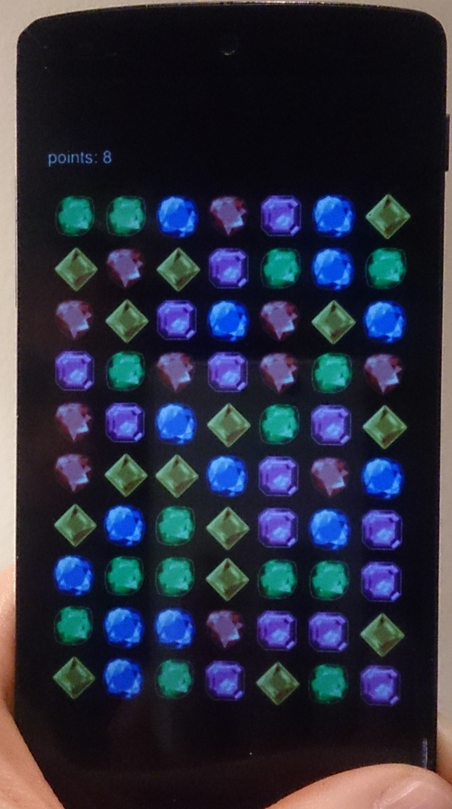
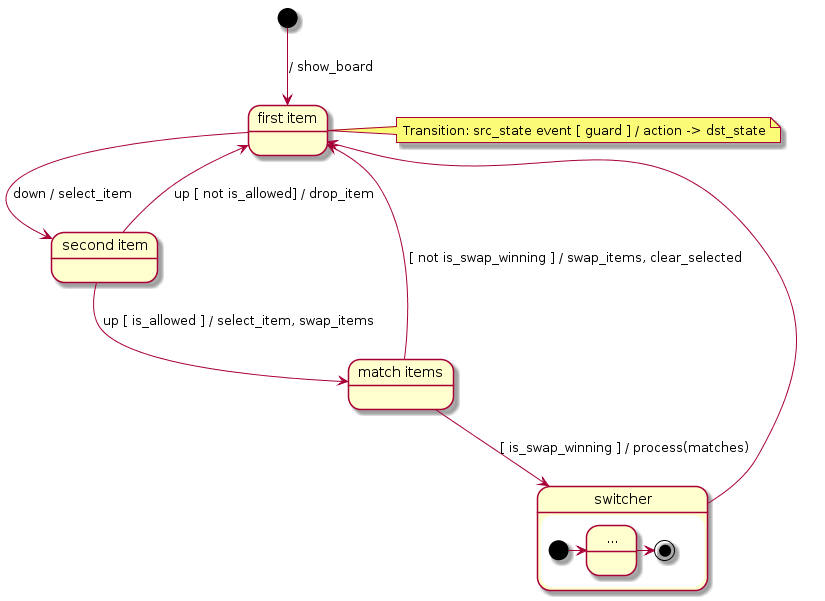
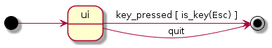
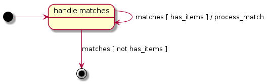

<!doctype html>
<html lang="en">

	<head>
		<meta charset="utf-8">

		<title>Implementing a web game in C++14</title>

		<meta name="description" content="Implementing a web game in C++14">
		<meta name="author" content="Kris Jusiak">

		<meta name="apple-mobile-web-app-capable" content="yes">
		<meta name="apple-mobile-web-app-status-bar-style" content="black-translucent">

		<meta name="viewport" content="width=device-width, initial-scale=1.0, maximum-scale=1.0, user-scalable=no, minimal-ui">

		<link rel="stylesheet" href="css/reveal.css">
    <link rel="stylesheet" href="css/theme/league.css" id="theme">

		<!-- Code syntax highlighting -->
    <link rel="stylesheet" href="lib/css/zenburn.css">

		<!-- Printing and PDF exports -->
		<script>
			var link = document.createElement( 'link' );
			link.rel = 'stylesheet';
			link.type = 'text/css';
			link.href = window.location.search.match( /print-pdf/gi ) ? 'css/print/pdf.css' : 'css/print/paper.css';
			document.getElementsByTagName( 'head' )[0].appendChild( link );
		</script>

		<!--[if lt IE 9]>
		<script src="lib/js/html5shiv.js"></script>
		<![endif]-->
	</head>

	<body>

		<div class="reveal">
			<div class="slides">

          <section data-markdown=""
                   data-separator="^====+$"
                   data-separator-vertical="^----+$"
                   data-notes="^Note:">
					<script type="text/template">
Meeting C++ 2016

#Implementing a web game in C++14

Kris Jusiak

---

[kris@jusiak.net](mailto:kris@jusiak.net) | [@krisjusiak](https://twitter.com/krisjusiak) | [linkedin.com/in/kris-jusiak](https://www.linkedin.com/in/kris-jusiak)

==============================================================================

##Agenda

* Match-3 Game
* Overview
  * Emscripten / WebAssembly
  * Range-v3
  * Boost.DI (Proposed)
  * Boost.SML (Proposed)
* Design
* Implementation
* Demo
* Summary

==============================================================================

##Match-3 game

| Match3 | Match4 | Match5 | MatchL |
|-|-|-|-|
|  |  |  |  |

---

> ####Core Mechanics
1. Swipe 2 items
2. Find and remove matches
3. Generate new items and scroll the board
5. Goto 2 // new matches?

----

##Play it in a browser on your device!



---

http://modern-cpp-examples.github.io/match3

==============================================================================

##Overview

----

##Emscripten

> Emscripten is an LLVM-based project that compiles C and C++ into highly-optimizable JavaScript in asm.js format or WebAssembly

C++ => LLVM => Emscripten => JavaScript (asm.js) => [optional] WebAssembly

####Compile
```sh
$em++ file.cpp -o index.html
```

####Run
```sh
$browser example.html
```
-----

##ASM.JS

> asm.js is an intermediate programming language designed to allow system programming languages to be run as web applications with more speed than JavaScript

###asm.js consists of a strict subset of JavaScript
* Statically-typed
* Manual memory management
* ~ 2x slower than native

----

##WebAssembly

> WebAssembly or wasm is a new portable, size- and load-time-efficient format suitable for compilation to the web

* Binary format
* Memory safe
* Native speed

| | |
|-|-|
| Binaryen (Compiler) | https://github.com/WebAssembly/binaryen |
| WebAssembly Explorer | <a href="http://mbebenita.github.io/WasmExplorer" data-preview-link>http://mbebenita.github.io/WasmExplorer</a> |
<!-- .element: style="margin-left:-10%; width:120%" -->

----

##Add Examaple

```cpp
int add(int l, int r) {
  return l + r;
}
```

####Compile to asm.js
```sh
$em++ add.cpp -ASM_JS=1 -o add.html && $browser add.html
```

####Compile to webassembly (asm2wasm)
```sh
$em++ add.cpp -s BINARYEN=1 -o add.html && $browser add.html
```

----

##Asm.js
```js
function add(l, r) {
  return (l + r)|0; // 32 bit integer
}
```

-----

##Add.wast (WebAssembly AST)

```cpp
(module
  (memory 1)
  (export "memory" memory)
  (export "_Z3addii" $_Z3addii)
  (func $_Z3addii (param $0 i32) (param $1 i32) (result i32)
    (return
      (i32.add
        (get_local $1)
        (get_local $0)
      )
    )
  )
)
```

----

##add.wasm (WebAssembly ASM)

```cpp
wasm-function[0]:
  sub rsp, 0x18                         ; 0x000020 48 83 ec 18
  mov eax, esi                          ; 0x000024 8b c6
  add eax, edi                          ; 0x000026 03 c7
  nop                                   ; 0x000028 66 90
  add rsp, 0x18                         ; 0x00002a 48 83 c4 18
  ret                                   ; 0x00002e c3
```

-----

##Range-v3

> Range library for C++11/14/17

https://github.com/ericniebler/range-v3

----

##Range-v3

* Header only
* Requirements
  * STL, Meta
* Full implementation of all the standard algorithms
* Minimal overhead
* Better error messages (concepts emulation)
* Supported compilers (C++11)
  * [Clang-3.5+](https://travis-ci.org/ericniebler/range-v3), [GCC-4.8+](https://travis-ci.org/ericniebler/range-v3), [MSVC-2015*+](https://github.com/microsoft/Range-V3-VS2015)

----

##Range-v3 - Hello World

```cpp
#include <range/v3/algorithm/sort.hpp>
#include <range/v3/view/all.hpp>
```

```cpp
int main() {
  std::vector<int> v{3, 4, 2, 1, 7};
  ranges::sort(v); // std::sort(v.begin(), v.end());
  std::cout << ranges::view::all(v) << '\n';
}
```

```sh
time $CXX -std=c++11 hello_world.cpp # 0.921s
```

```sh
./a.out
  [1,2,3,4,7]
```

----

##Range-v3 - Views

####Non-mutable custom snapshot of a sequence

```cpp
std::vector<int> vi{1,2,3,4,5,6,7,8,9,10};
auto rng = vi | ranges::view::drop(3) | ranges::view::take(2);
assert(ranges::equal(rng, {4, 5}));
```

----

##Range-v3 - Actions

####Mutate in place

```cpp
std::vector<int> vi{1,2,2,3,1,4};
vi |= ranges::action::sort | ranges::action::unique;
assert(ranges::equal(vi, {1,2,3,4}));
```

----

##Range-v3 - Algorithms

####Functions for a variety of purposes

```cpp
std::vector<int> vi{1,2,2,3,1,2};
assert(3 == ranges::count(vi, 2));
```

-----

##Experimental Boost.DI

> Dependency Injection Library

https://github.com/boost-experimental/di

----

##Boost.DI

* One header - 3k LOC - (boost/di.hpp) / generated
* Neither Boost nor STL is required
* No 'if's, 'virtual', 'exceptions' (-fno-rtti, -fno-exceptions)
* Non-intrusive
* No run-time overhead
* Quick compilation times
* Short and informative error messages
* Supported compilers (C++14)
  * [Clang-3.4+](https://travis-ci.org/boost-experimental/di), [XCode-6.1+](https://travis-ci.org/boost-experimental/di), [GCC-5.2+](https://travis-ci.org/boost-experimental/di), [MSVC-2015+](https://ci.appveyor.com/project/krzysztof-jusiak/di)

----

##Boost.DI - Hello World

```cpp
#include <boost/di.hpp>
namespace di = boost::di;
```

```cpp
struct iworld { virtual ~iworld() noexcept = default; };
struct world : iworld {};
struct ihello { virtual ~ihello() noexcept = default; };
struct hello : ihello {};
```

```cpp
struct hello_world {
  hello_world(const ihello&, const iworld&); // DI handles
};                  ^              ^         // order and types
                    |              \------------\
                    \----------------------\    |
int main() {                               |    |
  const auto injector = di::make_injector( |    |
     di::bind<ihello>.to<hello>() ---------/    |
   , di::bind<iworld>.to<world>() -------------/
  );

  auto hw = injector.create<unique_ptr<hello_world>>();
}
```

----

##Boost.DI - Hello World

```sh
time $CXX -std=c++14 hello_world.cpp # 0.102s
```

####ASM x86-64

```
push   %rbx
mov    %rdi,%rbx
mov    $0x8,%edi
callq  0x4009f0 <_Znwm@plt>
movq   $0x400e78,(%rax)
mov    %rax,(%rbx)
mov    %rbx,%rax
pop    %rbx
retq
```

####Same as

```cpp
return std::make_unique<hello_world>(...);
```

----

##Hello World - Errors

```cpp
const auto injector = di::make_injector(
// di::bind<ihello>.to<hello>() // missing 'ihello' binding
 , di::bind<iworld>.to<world>()
);
auto hw = injector.create<hello_world>();
```

####Full Compilation-Time Error Message

```cpp
error: 'create<hello_world>' is deprecated: creatable constraint
  injector.create<hello_world>();           not satisfied
           ^
note 'create<hello_world>' has been explicitly marked deprecated here
  create
  ^
error: inline function 'abstract_type<ihello>::is_not_bound::error'
 error(_ = "type is not bound, did you forget to add:
           'di::bind<interface>.to<implementation>()'?");
```

----

##Boost.DI vs Java

| **Library** | Boost.DI | Guice | Dagger2 |
| ----------  | -------- | ------------ | ------- |
| Language    | C++14    | Java | Java |
| Linkage     | header only | jar | jar |
| Approach    | compile-time | run-time | compile-time (annotation processor) |
| Errors      | compile-time errors | exceptions | compile-time errors |

----

##Benchmarks (Clang-3.8/Java8)

| 64 types, 1-4 ctor params, 1024 iterations | **Boost.DI** | **Guice** | **Dagger2** |
| --------------------- | ------------ | ---------------- | ------------- |
| Compilation time    | 0.376s       |  0.570s            | 1.411s        |
| Execution time      | 0.002s       |  0.528s            | 0.157s        |

---

| 256 types, 1-4 ctor params, 1024 iterations | **Boost.DI** | **Guice** | **Dagger2** |
| --------------------- | ------------ | ---------------- | ------------- |
| Compilation time    | 0.706s       | 0.642s             | 1.903s        |
| Execution time      | 0.002s       | 0.544s             | 0.210s        |

----

##Experimental Boost.SML

> UML-2.5 State Machine Language

https://github.com/boost-experimental/sml

-----

##Boost.SML

* One header - 2k LOC - (boost/sml.hpp) / generated
* Neither Boost nor STL is required
* Supports UML-2.5
* Quick compilation-times
* Fast run-time
* Supported compilers (C++14)
  * [Clang-3.4+](https://travis-ci.org/boost-experimental/sml), [XCode-6.1+](https://travis-ci.org/boost-experimental/sml), [GCC-5.2+](https://travis-ci.org/boost-experimental/di), [MSVC-2015+](https://ci.appveyor.com/project/krzysztof-jusiak/sml)

----

##Boost.SML - Hello World


----

##Boost.SML - Hello World

```cpp
#include <boost/sml.hpp>
namespace sml = boost::sml;
```

```cpp
// events
struct eat {};
struct full {};
```

```cpp
// guards/actions
const auto is_lunch_time = [] { return true; };
const auto go_for_food = [] { puts("going for food..."); };
```

```cpp
struct hello_world {
 auto operator()() const {
  // Transition table: src_state + event [ guard ] / action = dst_state
  return make_transition_table(
   *"hungry"_s + event<eat> [is_lunch_time] / go_for_food = "eating"_s
  , "eating"_s + event<full> / [] { puts("done!"); } = X
  );
 }
};
```

----

##Boost.SML - Hello World

```cpp
int main() {
  sml::sm<hello_world> sm;
  static_assert(1 == sizeof(sm), "sizeof(sm) != 1b");

  sm.process_event(eat{});
  sm.process_event(full{});
}
```

```sh
$./a.out
  going for food...
  done!
```

----

##Boost.SML - Hello World

```sh
time $CXX -std=c++14 hello_world.cpp # 0.079s
```

####ASM x86-64

```
process_event<eat>:
    movb  $1, (%r8)     // current state = 1
    movl  $.L.str, %edi // puts("going for food...")
    callq puts
    movl  $1, %eax      // handled
    ret

main:
    leaq  16(%rsp), %rdi
    movq  %rbx, %rsi
    movq  %rbx, %rdx
    movq  %rbx, %rcx
    movq  %rbx, %r8
    call  *process_event<eat> // O(1) - jump table
    ...
```

----

##Benchmarks (Clang-3.8)

| [Complex Test](https://github.com/boost-experimental/sml/tree/master/test/pt/complex) |      Boost.SML | Boost.MSM-eUML   | Boost.Statechart   |
|------------------|----------------|------------------|--------------------|
| Compilation time | 0.582s         | 1m15.935s        | 3.661s             |
| Execution time   | 72ms           | 81ms             | 6221ms             |
| Memory usage     | 1b             | 120b             | 200b               |
| Executable size  | 35K            | 611K             | 343K               |

==============================================================================

##Design

----

##Model-View-Controller


* Seperates business logic from UI
* Good for aplications and / or games

----

##Match-3 Game - Design


==============================================================================

##Implementation

----

##Main

```cpp
int main() {
  const auto injector = di::make_injector(configuration());
  injector.create<match3::game>().play(); // create a game and play
}
```

----

##Configuration

```cpp
const auto configuration = [] {
  return di::make_injector(
    di::bind<iview>.to<sdl_view>() // view (SDL2)

  , di::bind<>.to(config{ // config
       .title = "match3"
     , .board_size = {7, 10}
    })

  , di::bind<color_t[]>.to({ // initial level
      3,5,1,4,3,2,2,
      ...
      1,2,3,4,1,3,4
    })
  );
};
```

----

##View (SDL2)

```cpp
class ivew {
 public:
  virtual ~iview() noexcept = default;
  virtual void show_grid(int x, int y, color_t) = 0;
  virtual int get_position(int x, int y) const = 0;
  virtual void update() = 0;
};
```

----

##Game

```cpp
struct game {
 sml::sm<player>& player_; // controller state machine

 void play() {
   const auto dispatch_event = // create a jump table for SDL events
     make_dispatch_table<SDL_Event
                       , SDL_FIRSTEVENT
                       , SDL_LASTEVENT>(player_);
   while (!player_.is(sml::X)) { // is not in final state
     SDL_Event event;
     while (SDL_PollEvent(&event)) {
       dispatch_event(event, event.type);
     }
   }
 }
};
```

----

##make dispatch table

####Events have unique identifiers
```cpp
struct quit { static constexpr auto id = SDL_QUIT; }; // identifier

struct key_pressed {
  static constexpr auto id = SDL_KEYDOWN; // identifier

  explicit key_pressed(const SDL_Event& event)
    : key(event.key.keysym.sym)
  { }

  const int key = 0;
};
```

----

##make dispatch table

####state machine
```cpp
make_transition_table(
  (*"idle"_s)   + event<key_pressed> = "clicked"_s // id:SDL_KEYDOWN
  , "clicked"_s + event<quit> = X                  // id:SDL_QUIT
);                      ^
  ______________________|
 /
```

####Dispatch jump table
```cpp
 |  make_dispatch_table<SDL_Event, SDL_FIRSTEVENT, SDL_LASTEVENT> = {
 |    [...] = []{};
 |    [SDL_KEYDOWN] = [](const SDL_Event& e) {
 |    [...] = []{};     example.process_event(key_pressed{e}); };
 \--> [SDL_QUIT]    = [](const SDL_Event& e) {
      [...] = []{};     example.process_event(quit{}); };
    }
```


----

##Model (Board)

----

##Board

```cpp
class board {
public:
  bool is_match(const position) const;
  auto match(const position) const;
  void scroll(const position);
  decltype(auto) operator[](const position) const;

private:
  std::array<color_t, width * height> grids;
};
```

####Where
```cpp
                                   [ 0 1 2 ]
std::array<color_t, 3 * 3> grids = [ 3 4 5 ]
                                   [ 6 7 8 ]
```

----

##Row (idea)

```cpp
     | 1 2 3 |           |  1   2   3  |
row: | 3 4 5 | => n:1 => | [3] [4] [5] |
     | 6 7 8 |           |  6   7   8  |
```

----

##Row (helper)

```cpp
const auto row = [](auto&& view, auto n, auto width) {
  return view | view::drop(width * n) |
         view::take(width);  // or slice
};
```

```cpp
"row"_test = [] {
  int v[] = {1, 2, 3, 4, 5, 6};
  expect(equal({1, 2}, row(v, 0, 2)));
  expect(equal({3, 4}, row(v, 1, 2)));
  expect(equal({5, 6}, row(v, 2, 2)));
  expect(equal({1, 2, 3}, row(v, 0, 3)));
};
```

----

##Col (idea)

```cpp
     | 1 2 3 |           | 1 [2] 3 |
col: | 3 4 5 | => n:1 => | 3 [4] 5 |
     | 6 7 8 |           | 6 [7] 8 |
```

----

##Col (helper)

```cpp
const auto col = [](auto&& view, auto n, auto width) {
  return view | view::drop(n) | view::stride(width);
};
```

```cpp
"col"_test = [] {
  int v[] = {1, 2, 3, 4, 5, 6};
  expect(equal({1, 3, 5}, col(v, 0, 2)));
  expect(equal({2, 4, 6}, col(v, 1, 2)));
  expect(equal({1, 4}, col(v, 0, 3)));
};
```

----

##Match-N (idea)

####Match-3
```cpp
         | 1 3 3 3 |               | 1 [3] [3] [3] |    {
match-n: | 1 2 1 1 | => color:3 => | 1  2   1   1  | =>   begin: 1
         | 3 2 2 1 |    n:1        | 3  2   2   1  |      length: 3
                                                        }
```

####No Match
```cpp
         | 1 3 2 3 |               | 1 3 3 3 |    {
match-n: | 1 2 1 1 | => color:3 => | 1 2 1 1 | =>   begin: 0
         | 3 2 2 1 |    n:1        | 3 2 2 1 |      length: 0
                                                  }
```

----

##Match-N (helper)

```cpp
const auto match_n = [](auto&& view, auto color, const int n = 3) {
  const auto&& matches = view::ints | view::take(size(view) - n + 1) |
      view::transform([=](auto i) {
        return count(view | view::drop(i) | view::take(n), color) == n;
      });

  const auto it = find(matches, true/*is match*/);
  const auto found = it != end(matches);
  const auto mlength = found ? count(matches, is_match) + (n - 1) : 0;
  const auto mbegin = found ? distance(begin(matches), it) : 0;

  struct { decltype(mbegin) begin; decltype(mlength) length; }
    result{mbegin, mlength};
  return result;
};
```

----

##Match-N (tests)

```cpp
"match n fail"_test = [] {        "match n success 4"_test = [] {
  int v[] = {1, 3, 2, 3, 2};        int v[] = {1, 3, 3, 3, 3, 2};
  auto m = match_n(v, 3);           auto m = match_n(v, 3);
  expect(0 == m.begin);             expect(1 == m.begin);
  expect(0 == m.length);            expect(4 == m.length);
};                                };

"match n success 3"_test = [] {   "match n success 5"_test = [] {
  int v[] = {1, 3, 3, 3, 2};        int v[] = {1, 2, 3, 3, 3, 3, 3, 2};
  auto m = match_n(v, 3);           auto m = match_n(v, 3);
  expect(1 == m.begin);             expect(2 == m.begin);
  expect(3 == m.length);            expect(5 == m.length);
};                                };
```

----

##Is match

####Match
```cpp
       | 2 3 4 5 |            | 2 3  4  5 |    | 2 3  4  5 |
       | 7 7 9 3 |            | 7 7  9  3 |    | 7 7  9  3 |
match: | 3 4 5 3 | => n:10 => | 3 4 [5] 3 | => | 3 4 [5] 3 | => true
       | 1 3 5 1 |            | 1 3  5  1 |    | 1 3 [5] 1 |
       | 2 1 5 8 |            | 2 1  5  8 |    | 2 1 [5] 8 |
```

####No match
```cpp
       | 2 3 4 5 |            | 2 3 4  5  |    | 2 3 4 5 |
       | 7 7 9 3 |            | 7 7 9  3  |    | 7 7 9 3 |
match: | 3 4 5 3 | => n:11 => | 3 4 5 [3] | => | 3 4 5 3 | => false
       | 1 3 5 1 |            | 1 3 5  1  |    | 1 3 5 1 |
       | 2 1 5 8 |            | 2 1 5  8  |    | 2 1 5 8 |
```

----

##Is match

```cpp
const auto is_match = [](auto&& view, auto n, auto width) {
  const auto color = view[n];
  const auto x = n % width;
  const auto y = n / width;
  return match_n(row(view, y, width), color).length ||
         match_n(col(view, x, width), color).length;
};
```

```cpp
"is match fail"_test = [] {
  int v[] = {1, 2, 3, 4, 3, 6, 7, 2, 9};
  expect(!is_match(v, 1, 3));
};

"is match success"_test = [] {
  int v[] = {1, 2, 3, 4, 2, 6, 7, 2, 9};
  expect(is_match(v, 1, 3));
};
```

----

##Match

####Match
```cpp
       | 1 2 3 4 5 |            | 1  2 3  4  5 |    | 1  2   3   4  5 |
       | 6 7 7 9 3 |            | 6  7 7  9  3 |    | 6  7   7   9  3 |
match: | 2 5 5 5 3 | => n:13 => | 2  5 5 [5] 3 | => | 2 [5] [5] [5] 3 |
       | 2 1 3 5 1 |            | 2  1 3  5  3 |    | 2  1   3  [5] 3 |
       | 4 2 1 5 8 |            | 4  2 1  5  8 |    | 4  2   1  [5] 8 |

    => [11, 12, 13, 18, 23]
```

####No Match
```cpp
       | 1 2 3 4 5 |           | [1] 2 3 4 5 |    | [1] 2 3 4 5 |
       | 6 7 7 9 3 |           |  6  7 7 9 3 |    |  6  7 7 9 3 |
match: | 2 5 5 5 3 | => n:1 => |  2  5 5 5 3 | => |  2  5 5 5 3 | => []
       | 2 1 3 5 1 |           |  2  1 3 5 3 |    |  2  1 3 5 3 |
       | 4 2 1 5 8 |           |  4  2 1 5 8 |    |  4  2 1 5 8 |
```

----

##Match

```cpp
const auto match = [](auto&& view, auto n, auto width) {
  const auto color = view[n];
  const auto x = n % width, y = n / width;
  const auto match_r = match_n(row(view, y, width), color);
  const auto match_c = match_n(col(view, x, width), color);
  const auto transform = [](auto length, auto expr) {
    return view::ints | view::take(length) | view::transform(expr);
  };
```

```cpp
  std::vector<decltype(n)> result = view::concat(
    transform(match_r.length,
      [=](auto i) { return y * width + match_r.begin + i; }),
    transform(match_c.length,
      [=](auto i) { return (match_c.begin + i) * width + x; }));
  result |= action::sort | action::unique;
  return result;
};
```

----

##Match (tests)

```cpp
"match fail"_test = [] {
  int v[] = {1, 2, 3, 4, 3, 3, 7, 2, 4};
  expect(equal(std::vector<int>{}, match(v, 2, 3)));
};

"match success"_test = [] {
  int v[] = {1, 2, 3, 4, 3, 3, 7, 2, 3};
  expect(equal({2, 5, 8}, match(v, 2, 3)));
};
```

----

##Scroll (idea)

```cpp
        | 1 1 3 |                     | 1  1  3 |    | 1 0 3 |
scroll: | 3 0 5 | => n:4, width: 3 => | 3 [0] 5 | => | 3 1 5 |
        | 6 0 8 |                     | 6  0  8 |    | 6 0 8 |
```

----

##Scroll

```cpp
const auto scroll = [](auto&& view, auto n, auto width) {
  const auto&& c =
    col(view, n % width, width) | view::take(n / width + 1);
  auto begin = begin(c);
  advance(begin, n / width);
  rotate(c, begin);
};
```

```cpp
"scroll"_test = [] {
  int v[] = {1, 1, 3,
             4, 0, 2,
             7, 0, 3};

  scroll(v, 4, 3);
  expect(equal({1, 0, 3,
                4, 1, 2,
                7, 0, 3}, v));
};
```

----

##Controller (Player State Machine)



----

##Player Transition Table


```cpp
(*"idle"_s) / show_board == "first item"_s
```

----

##Show board

```cpp
const auto show_board =
  [](const board& b, iview& v) { for(auto pos : b) v.show_grid(
           ^         ^             pos.x, pos.y, b[pos]);
           |         |         }
           |         |
           |         | // Where these came from?
```

####From main
```cpp
           |         |
   /------/          \______________________
  |                                         |
  |     configuration -> di::bind<iview>.to<sdl_view>()
  |     main -> injector.create<match3::game>();
  |                      | // automatically injected by DI
  \ ____________________/
```

----

##Show board - DI


####Different types
```cpp
const auto show_board =
  [](const board& b, const shared_ptr<iview>& v); // OK -> DI
```

####Different order
```cpp
const auto show_board =
  [](iview& v, const board& b); // OK -> DI
```

####With event
```cpp
const auto show_board =
  [](iview& v, const auto& event, const board& b); // OK -> DI
                     ^
                     \__ from sm.process_event(event)
```

----

##Player Transition Table


```cpp
"first item"_s + event<down> / select_item = "second item"_s
```

####Where
```cpp
struct down { // event
  static constexpr auto id = SDL_MOUSEBUTTONDOWN|SDL_FINGERDOWN; // identifiers

  explicit down(const SDL_Event& event)
    : down(event, EM_ASM_INT_V({return /iPhone|iPad|iPod|Android/i.test(navigator.userAgent);}))
  { } //          ^__ Call Java Script

  down(const SDL_Event& event, bool is_mobile)
    : x(is_mobile ? event.tfinger.x : event.button.x)
    , y(is_mobile ? event.tfinger.y : event.button.y) { }

  const int x, y = 0;
};
```
<!-- .element: style="margin-left:-10%; width:120%" -->

----

##Select Item

```cpp
const auto select_item =
  [](const auto& event, const iview& v, selected& s) {
    s.emplace_back(v.get_position(event.x, event.y));
};
```

```cpp
"should select item"_test = [] {
  selected s;
  When(Method(mock<iview>, get_position)).Using(1, 2).Return(42);

  select_item(down{1, 2}, mock<iview>, s);

  assert(1 == s.size());
  expect(42 == s[0]);
};
```

----

##Player Transition Table


```cpp
"second item"_s + event<up> [ is_allowed ] / select_item, swap_items = "match items"_s
```
<!-- .element: style="margin-left:-5%; width:110%" -->

----

##Is Allowed

```cpp
const auto is_allowed =
  [](const view& v, const selected& s, const auto& event) {
    assert(!s.empty());
    const auto _1 = s.back();
    const auto _2 = v.get_position(event.x, event.y);
    return 1 == std::abs(_1 - _2); // is neighbour
};
```

```cpp
"should allow"_test = [] {
  selected s = {1};
  When(Method(mock<iview>, get_position)).Using(1, 2).Return(2);
                                         .Using(2, 2).Return(7);

  expect(!is_allowed(mock<iview>, {1}, up{2, 2}));
  expect(is_allowed(mock<iview>, {1}, up{1, 2}));
};
```

----

##Player Transition Table


```cpp
"second item"_s + event<up> [ not is_allowed ] / drop_item = "first item"_s
```
<!-- .element: style="margin-left:-5%; width:110%" -->

----

##Drop Item

```cpp
const auto drop_item = [](selected& s) {
  assert(!s.empty());
  s.pop_back();
};
```

```cpp
"drop item"_test = [] {
  selected s = {1};
  drop_item(s);
  expect(s.empty());
};
```

----

##Player Transition Table


```cpp
"match items"_s [ is_swap_winning ] / process(matches{.arity=2}) = state<switcher>
```
<!-- .element: style="margin-left:-5%; width:110%" -->

----

##Is swap winning

```cpp
const auto is_swap_winning = [](const board& b, const selected& s) {
  assert(s.size() == 2);
  return b.is_match(s[0]) || b.is_match(s[1]);
};
```

```cpp
"is swap winning"_test = [] {
  board b = {1,2,1,2};
  expect(!is_item_winning(b, {1, 2}));

  board b = {1,1,1,2};
  expect(is_item_winning(b, {1, 2}));
};
```

----

##Player Transition Table


```cpp
"match items"_s [ not is_swap_winning ] / swap_items, clear_selected = "first item"_s
```
<!-- .element: style="margin-left:-5%; width:110%" -->

----

##Swap Items

```cpp
const auto swap_items = [](const selected& s, board& b) {
  assert(s.size() == 2);
  std::swap(b[s[0]], b[s[1]]);
};
```

```cpp
"should swap items"_test = [] {
  board b = {1, 2};
  selected s = {0, 1};

  swap_items(s, b);

  expect(equal({2, 1}, b));
};
```

----

##Player Transition Table


```cpp
state<switcher> = "first item"_s
```

----

##Player Transition Table (just for desktop)



```cpp
(*"ui"_s) + event<key_pressed> [ is_key(SDLK_ESCAPE) ] = X,
  "ui"_s  + event<quit>                                = X
```

----

##Is key

```cpp
const auto is_key = [](int key) {
  return [=](auto event) { return event.key == key; };
};
```

```cpp
"is key"_test = [] {
  struct { int key; } nope{0};
  expect(!is_key(42)(nope));

  struct { int key; } yes{42};
  expect(is_key(42)(yes));
};
```

----

##Player Transition Table (All together)

```cpp
make_transition_table(
  (*"idle"_s)                     / show_board                             = "first item"_s,
    "first item"_s  + event<down> / select_item                            = "second item"_s,
    "first item"_s  + event<down> / select_item                            = "second item"_s,
    "second item"_s + event<up> [ is_allowed ] / select_item, swap_items   = "match items"_s,
    "second item"_s + event<up> [ not is_allowed ] / drop_item             = "first item"_s,
    "match items"_s   [ is_swap_winning ] / process(matches{.arity=2})     = state<switcher>,
    "match items"_s   [ not is_swap_winning ] / swap_items, clear_selected = "first item"_s,
    state<switcher>                                                        = "first item"_s,
```
<!-- .element: style="margin-left:-10%; width:120%" -->

```cpp
 (*"ui"_s) + event<key_pressed> [ is_key(SDLK_ESCAPE) ]                    = X,
   "ui"_s  + event<quit>                                                   = X
);
```
<!-- .element: style="margin-left:-10%; width:120%" -->

----

##Switcher State Machine



----

##Switcher Transition Table

```cpp
make_transition_table(
  (*"handle matches"_s) + event<matches> [ has_items ] / process_match
    "handle matches"_s  + event<matches> [ not has_items ] = X // final state
);
```
<!-- .element: style="margin-left:-5%; width:110%" -->

----

##has items

```cpp
struct matches {
  static constexpr auto id = __COUNTER__; // identifier
  int arity = 0;
  std::vector<int> matches;
};
```

```cpp
const auto has_items = [](const selected& s) { return !s.empty(); };
```

```cpp
const auto process_match = (
    find_matches
  , scroll_board
  , generate_items
  , process(matches{.arity = 1}) // next item
);
```

----

##Find matches

```cpp
const auto find_matches = [](const board& b, auto& m, selected& s) {
  for (item : selected) m.matches |= action::push_back(b.match(item)));
  m.matches = | action::sort | action::unique;
};
```

```cpp
"find matches"_test = [] {
  board b = {1, 2, 3, 1, 1, 1, 1, 2, 3};
  selected s = {1, 3};
  struct { int arity; std::vector<color_t> matches = {}; }
    event{s.size()};

  find_matches(b, event, s);

  expect(s.empty());
  expect(equal({0, 3, 4, 5, 6}, event.matches));
};
```

----

##Scroll board

```cpp
const auto scroll_board = [](board& b, const auto& matches) {
  for (auto match: matches) b.scroll(match);
};
```

```cpp
"scroll board"_test = [] {
  board b = {4, 3, 3, 3, 2, 2, 0, 0, 0};
  struct { std::vector<color_t> matches; } event{{6, 7, 8}};

  scroll_board(b, event);

  expect(equal({0, 0, 0, 4, 3, 3, 3, 2, 2}, b));
};
```

----

##Generate items

```cpp
const auto generate_new = [](board& b, const auto& m
                          , const std::function<color_t()>& random) {
  for (auto match : m.matches) b[match] = random();
};
```

```cpp
"generate items"_test = [] {
  static constexpr auto NEW = 42;
  board b = {4, 0, 3, 3, 0, 2, 1, 0, 3};
  selected s = {0, 5};
  struct { std::vector<color_t> matches; } event{{1, 4, 7}};

  generate_items(b, event, s);

  expect(equal({4, NEW, 3, 3, NEW, 2, 1, NEW, 3}, b));
  expect(equal({0, 1, 4, 5, 7}, s));
};
```

----


==============================================================================

##Compile & Run

----

###Compile
```sh
$em++ -std=c++14 src/main.cpp
      -s USE_SDL=2 -s USE_SDL_IMAGE=2 -s USE_SDL_TTF=2 #SDL2 port
      -s BINARYEN=1 # WebAssembly (asm2wasm)
      --preload-file data # images and fonts
      --use-preload-plugins # load data
      -o index.html
```

###Run
```sh
$browser index.html
```

----

##Match-3 details

| File         | Size | Type | Description              |
| ------------ | ---- | ---- | ------------------------ |
| index.html   | 6.4K | HTML | Emscripten / WebAssembly |
| index.js     | 9.6M | JS   | Asm.js / Emscripten      |
| index.data   | 720K | BIN  | Data / Emscripten        |
| index.wast   |  30M | TXT  | WebAssembly AST          |
| index.wasm   | 1.4M | BIN  | WebAssembly BIN          |

----

##index.html

````cpp
<html lang="en-us">
  <head>
    <title>Match-3</title>
  </head>
  ...
  var xhr = new XMLHttpRequest();
  xhr.open('GET', 'index.wasm', true); // try webassembly
  xhr.responseType = 'arraybuffer';
  xhr.onload = function() {
    Module.wasmBinary = xhr.response;
    var script = document.createElement('script');
    script.src = "index.js"; // downgrade to asm.js
    document.body.appendChild(script);
  };
  xhr.send(null);
  ...
</html>
```

----

###index.asm.js (ASM.jS)

```js
function RJ(a,b,d,e,f,h,j){a=a|0;b=b|0;d=d|0;e=e|0;f=+f;h=+h;...
function _z(b,e){b=b|0;e=e|0;var f=0,g=0,h=0,j=0,k=0,l=0,m=0,...
function Ou(f,g,h){f=f|0;g=g|0;h=h|0;var i=0,j=0,k=0,l=0,m=0,...
function an(a,b){a=a|0;b=b|0;var d=0,e=0,f=0,g=0,h=0,i=0,j=0,...
function Mr(b,d){b=b|0;d=d|0;var e=0,f=0,g=0,h=0,i=0,j=0,k=0,...
function ox(d,f){d=d|0;f=f|0;var g=0,h=0,j=0,k=0,l=0,m=0,n=0,...
function Ag(a){a=a|0;var b=0;b=i;i=i+a|0;i=i+15&-16;return b|...
function kD(a){a=a|0;var b=0,d=0,e=0,f=0,g=0,h=0,i=0,j=0,k=0,...
function Op(e,f,g,h,j,k,l,m){e=e|0;f=f|0;g=g|0;h=h|0;j=j|0;k=...
function oI(f,g,h,i,j,k,l){f=f|0;g=g|0;h=h|0;i=i|0;j=j|0;k=k|...
function lF(b){b=b|0;var e=0,f=0,g=0,h=0,i=0,j=0,k=0,l=0,m=0,...
function LE(b){b=b|0;var f=0,g=0,h=0,i=0,j=0,k=0,l=0,m=0,n=0,...
function LP(a){a=a|0;var b=0,d=0,e=0,f=0,g=0,h=0,j=0,k=0,l=0,...
...
```

----

##index.wasm (WebAssembly BIN)

```
0000000: 4243 c0de 3514 0000 0500 0000 620c 3024  BC..5.......b.0$
0000010: 4959 bee6 edf7 3e2d 4401 3205 0000 0000  IY....>-D.2.....
0000020: 210c 0000 eb1c 0300 0b82 2000 0200 0000  !......... .....
0000030: 1300 0000 0781 2391 41c8 0449 0610 3239  ......#.A..I..29
0000040: 9201 840c 2505 0819 1e04 8b62 802c 4502  ....%......b.,E.
0000050: 4292 0b42 6411 3214 3808 184b 0a32 b288  B..Bd.2.8..K.2..
0000060: 4890 1420 4346 88a5 0019 3242 e448 0e90  H.. CF....2B.H..
0000070: 9125 c450 4151 818c e183 e58a 0459 4606  .%.PAQ.......YF.
0000080: 5118 0000 f106 0000 1bc4 24f8 ffff ffff  Q.........$.....
0000090: 0180 0382 1cd2 611e c241 1cd8 a11c da80  ......a..A......
00000a0: 1ec2 211d d8a1 0dc6 211c d881 1de6 0130  ..!.....!......0
00000b0: 8770 6087 7928 0780 6087 7298 8779 6803  .p`.y(..`.r..yh.
00000c0: 7890 8772 1887 7498 8772 6803 7380 8776  x..r..t..rh.s..v
00000d0: 0807 7200 cc21 1cd8 611e ca01 20dc e11d  ..r..!..a... ...
00000e0: dac0 1ce4 211c daa1 1cda 001e de21 1ddc  ....!........!..
...
```

==============================================================================

##Demo / C++14 on the slide!

<div class="stretch">
  <iframe src="http://modern-cpp-examples.github.io/match3" height="100%" width="100%" />
</div>

==============================================================================

##Summary

----

###C++ on the web is happening!

----

### Leverage Zero-cost libraries (not only abstractions)

----

### Range-v3 is easier and more powerful than STL(v1)

----

### Dependency Injection + State Machine = Powerful Design

==============================================================================

##Questions?

[kris@jusiak.net](mailto:kris@jusiak.net) | [@krisjusiak](https://twitter.com/krisjusiak) | [linkedin.com/in/kris-jusiak](https://www.linkedin.com/in/kris-jusiak)

|  |  |
| ------- | ------------- |
| Match-3 Game | https://github.com/modern-cpp-examples/match3 |
| Emscripten | http://emscripten.org |
| WebAssembly | http://webassembly.org |
| Range-V3 | https://github.com/ericniebler/range-v3 |
| Boost.DI (Propsed) | https://github.com/boost-experimental/di |
| Boost.SML (Propsed) | https://github.com/boost-experimental/sml |
<!-- .element: style="margin-left:-15%; width:130%" -->

					</script>
				</section>

			</div>
		</div>

		<script src="lib/js/head.min.js"></script>
		<script src="js/reveal.js"></script>

		<script>

			// Full list of configuration options available at:
			// https://github.com/hakimel/reveal.js#configuration
			Reveal.initialize({

        // Display controls in the bottom right corner
        controls: true,

        // Display a presentation progress bar
        progress: true,

        // Display the page number of the current slide
        slideNumber: true,

        // Push each slide change to the browser history
        history: true,

        // Enable keyboard shortcuts for navigation
        keyboard: true,

        // Enable the slide overview mode
        overview: true,

        // Vertical centering of slides
        center: true,

        // Enables touch navigation on devices with touch input
        touch: true,

        // Loop the presentation
        loop: false,

        // Change the presentation direction to be RTL
        rtl: false,

        // Turns fragments on and off globally
        fragments: false,

        // Flags if the presentation is running in an embedded mode,
        // i.e. contained within a limited portion of the screen
        embedded: false,

        // Flags if we should show a help overlay when the questionmark
        // key is pressed
        help: true,

        // Flags if speaker notes should be visible to all viewers
        showNotes: false,

        // Number of milliseconds between automatically proceeding to the
        // next slide, disabled when set to 0, this value can be overwritten
        // by using a data-autoslide attribute on your slides
        autoSlide: 0,

        // Stop auto-sliding after user input
        autoSlideStoppable: true,

        // Enable slide navigation via mouse wheel
        mouseWheel: true,

        // Hides the address bar on mobile devices
        hideAddressBar: true,

        // Opens links in an iframe preview overlay
        previewLinks: false,

        // Transition style
        transition: 'convex', // none/fade/slide/convex/concave/zoom

        // Transition speed
        transitionSpeed: 'default', // default/fast/slow

        // Transition style for full page slide backgrounds
        backgroundTransition: 'default', // none/fade/slide/convex/concave/zoom

        // Number of slides away from the current that are visible
        viewDistance: 3,

        // Parallax background image
        parallaxBackgroundImage: '', // e.g. "'https://s3.amazonaws.com/hakim-static/reveal-js/reveal-parallax-1.jpg'"

        // Parallax background size
        parallaxBackgroundSize: '', // CSS syntax, e.g. "2100px 900px"

        // Number of pixels to move the parallax background per slide
        // - Calculated automatically unless specified
        // - Set to 0 to disable movement along an axis
        parallaxBackgroundHorizontal: null,
        parallaxBackgroundVertical: null,

				// Optional reveal.js plugins
				dependencies: [
					{ src: 'lib/js/classList.js', condition: function() { return !document.body.classList; } },
					{ src: 'plugin/markdown/marked.js', condition: function() { return !!document.querySelector( '[data-markdown]' ); } },
					{ src: 'plugin/markdown/markdown.js', condition: function() { return !!document.querySelector( '[data-markdown]' ); } },
					{ src: 'plugin/highlight/highlight.js', async: true, callback: function() { hljs.initHighlightingOnLoad(); } },
					{ src: 'plugin/zoom-js/zoom.js', async: true },
					{ src: 'plugin/notes/notes.js', async: true }
				]
			});

		</script>

	</body>
</html>
